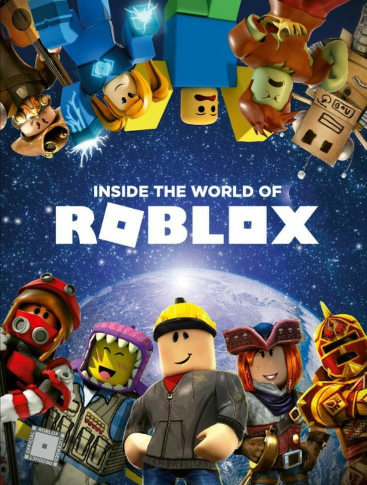

★★★★★
I absolutely love playing Animal Crossing as it calm my soul.
Gaming is one of my favorite ways to unwind and have fun. I love exploring vibrant worlds, managing virtual lives, and playing online with friends.
Whether I am cozying up with my Nintendo Switch, building a dream mansion in The Sims, or jumping into custom minigames on Roblox, gaming always keeps me entertained.
Games that currently have my entire attention span!
| Game Title | Platform | Genre | Status |
|---|---|---|---|
| The Sims 4 | PC / Laptop | Life Simulation | |
| Animal Crossing: New Horizons | Nintendo Switch | Cozy Simulation | |
| Any Horror Games (Roblox) | Roblox (PC/Mobile) | Arcade | |
| The Legend of Zelda: Breath of the Wild | Nintendo Switch | Action-Adventure | To Play |
I will always repeatedly play these games. But sometimes I do not have any much time to play it since I have a busy schedule.>_<
I absolutely love playing Animal Crossing as it calm my soul.

Building houses and creating storylines for hours is so therapeutic! I love collecting packs.

Roblox is so much fun because there are endless custom worlds to play with friends! It never gets old.
Check out some clips and screenshots from my favorite gaming sessions!
I do not have any video of me playing roblox, but I do have some picture so here it is. Winning mini-games with friends or showing off fits in Dress To Impress!
A little tour of my island in Animal Crossing: New Horizons. So cozy! This is my favourite game if I want to relax and unwind.
Spent 5 hours building this aesthetic modern mansion yesterday!
I also read other authors, but these are the ones that I read the most. Do tell me if you have any suggestions!
Bye, thank you for reading it out ( •̀ ω •́ )y